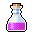
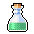

| Icon | Name | Description |
|---|
 | water | Drinking water restores a character's water level. |
|  | wine | Drinking wine restores a character's water level and may make it intoxicated. |
|  | poison | Drinking poison poisons a character, making it lose hit points for several turns. |
 | blood | Drinking blood restores a vampire's blood level. |
 | sleeping potion | Drinking a sleeping potion puts a character to sleep for several turns. |
 | healing potion | Drinking a healing potion restores hit points. |
 | cure poison potion | Drinking a cure poison potion cures a character from being poisoned. |
 | cure disease potion | Drinking a cure disease potion cures a character from all diseases. |